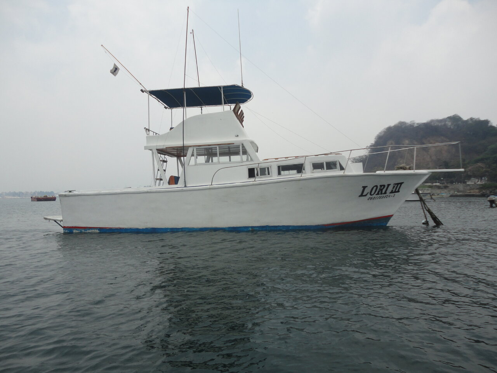

EL BUQUE INSIGNIA · 4.8 ★ (83 reseñas)
LORI III
Astilleros Manzanillo 40' · Caterpillar 350 HP
Un yate de pesca de altura con dos primeros oficiales a bordo. Hasta 30 millas mar adentro, silla de combate, tangones y el barco con más historias de marlín de la flota.
- ESLORA
- 40 pies
- MOTOR
- Caterpillar 350 HP
- CAPACIDAD
- Hasta 8 pescadores
- TRIPULACIÓN
- Capitán + 2 marineros
- A BORDO
- Baño, hielera, silla de combate
- SALIDAS
- 4, 5, 6, 8 y 10 horas